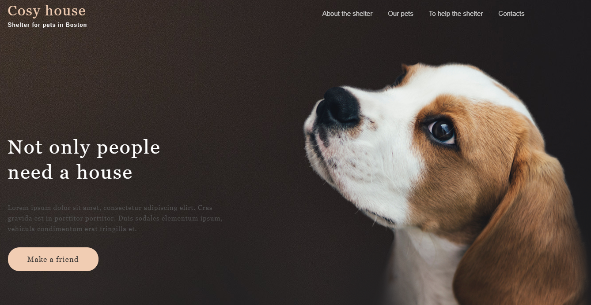

О себе
Меня зовут Ярослава, живу в Минске и сейчас я в активном поиске вакантных позиций верстальщика на постоянную или проектную работу. Отлично справляюсь с самоорганизацией как в условиях офиса, так и при удаленной работе, соблюдаю дедлайны и не пропадаю без вести, когда сроки поджимают.
Основные навыки
-
Sass/Gulp
Использую препроцессор Sass, предпочитаю синтксис SCSS, при необходимости без проблем перехожу на LESS. Для автоматизации и сборки использую Gulp.
-
HTML5/CSS3/JS
Использую методологию БЭМ для организации разметки, верстаю семантично и валидно, слежу за кроссбраузерностью во всех современных браузерах.
-
Adaptive
Верстаю адаптивно на флексах. Работаю и с фиксом, и с резиной. При необходимости провожу оптимиацию загруки (предзагрузка шрифтов, работа с изображениями)
-

Учебный проект "Мишка"
Адаптивная вёрстка, БЭМ, сборка на Gulp. Главная, каталог, форма + модальное окно с выбором размера.
-
"Камако" - тестовое задание
HTML5, CSS3, flexbox, слайдер Pepermint. Верстка на чистом CSS, подключение адаптивного слайдера.
-

Учебный проект "Техномарт"
Аккуратная валидная верстка главной, каталога и модалього окна. Слайдер, модальное окно и табы на нативном JS.
-
Nursery Supply Co.
Адаптивная резиновая верстка. Sass, Gulp, разметка по методологии БЭМ, оптимизация кода и картинок.
-

Приют для животных
Аккуратный макет сайта приюта для животных: главная и каталог питомцев. Простая семантичная верстка на флексах.
-
Лендинг-портфолио креативного агентства
Типичный лендинг, разбитый на отдельные смысловые блоки. Валидная семантичная разметка.
Контакты
-
Телефон
+375 29 271 00 44 -
Email
gordislava@gmail.com